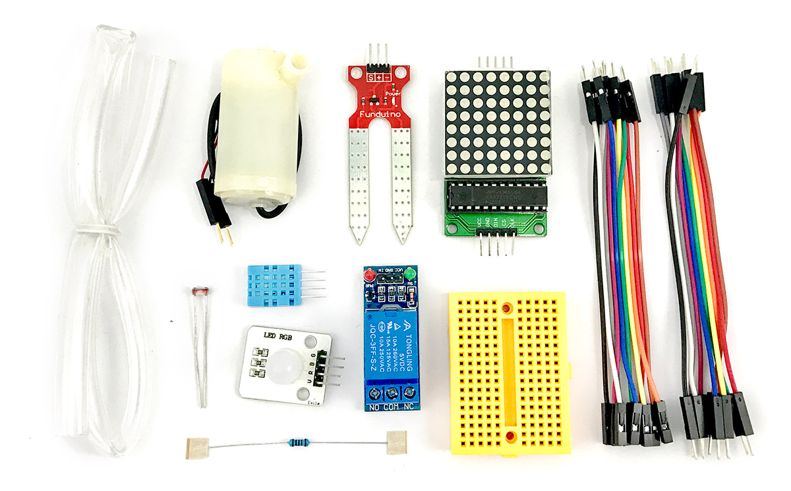

Webduino 智慧植栽套件
Webduino 智慧植栽套件是專門針對植物栽培的套件，內含繼電器、水泵、光敏電阻與土壤濕度偵測...等植栽專用零件組合，當土壤濕度不足時啟動水泵自動澆水，並透過溫濕度傳感器、光敏電阻偵測環境變化，隨時記錄或發送通知，透過Webduino 智慧植栽套件讓種植作物更智慧！
售價：
新台幣 565 元整 ( 已含稅，原價 630 )
產品內容：
- 1. 三色 LED ×1
- 2. 光敏電阻 ×1
- 3. 溫濕度傳感器 ×1
- 4. 170 孔麵包板 ×1
- 5. LED 點矩陣 ×1
- 6. 土壤濕度傳感器 x1
- 7. 繼電器 x1
- 8. 1k 電阻 x1
- 9. 水泵 x1
- 10.小水管 x1
- 11.杜邦線 ( 公公 ) x10
- 12.杜邦線 ( 公母 ) x10
- 13.零件盒 x1
產品照片：
